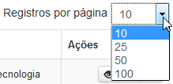

Comentar artefatos
Para comentar um artefato, clique no ícone disponível na coluna Ações da Área de Trabalho. Esse ícone está disponível tanto na aba de Documentos quanto na aba de Processos:
Aba Documentos - Comentário
Aba Processos - Comentário
A tela Comentar é exibida apresentando em seu título o número do artefato (documento ou processo) selecionado. Quando ainda não existem comentários, o sistema apresenta a mensagem “Nenhum registro encontrado”. E nessa situação as únicas ações disponíveis são: Cadastrar um novo Comentário e gerar Histórico de Comentário:
Comentar Documento - Lista de Comentários vazia

Comentar Processo - Lista de Comentários vazia
Se já existirem comentários, eles serão relacionados (em ordem decrescente de data/hora) em uma grid onde existe um subtítulo Lista de Comentários. Para cada comentário listado são disponibilizadas as ações de Visualizar, Alterar e Excluir. Além disso, é possível visualizar e imprimir um Histórico de Comentários por meio do botão Imprimir e também Cadastrar novos comentários se desejar.
Comentar Documento - Lista de Comentários cadastrados
 Formas de visualizar os comentários na Lista de Comentários!
Formas de visualizar os comentários na Lista de Comentários!



Para sair da tela Comentar, clique no botão :
Tela Comentar
O sistema retornará para a Área de Trabalho.
Created with the Personal Edition of HelpNDoc: Create HTML Help, DOC, PDF and print manuals from 1 single source